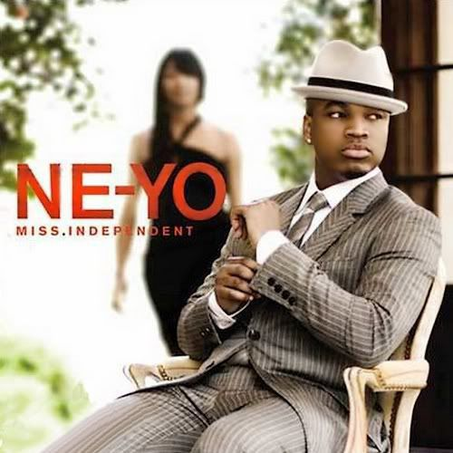

Miss Independent
Click any line to skip audio playback directly
Yeah, yeah, yeah, yeah
Yeah, yeah, yeah, yeah
Yeah, yeah, yeah, yeah
Ooh, it's something about just something about the way she move
I can't figure it out, it's something about her
Say, ooh, it's something about kinda woman that want you but don't need you
Hey, I can't figure it out, it's something about her
'Cause she work like a boss, play like a boss
Car and a crib, so she play like a boss
Mama independent, yeah, she made it on her own
Got her own car, got her own phone
She ain't looking for a man to provide
'Cause she got her own dough, got her own pride
She got her own thing, that's why I love her
Miss Independent, won't you come and spend a little time?
She got her own thing, that's why I love her
Miss Independent, ooh, the way you shine
There's something, oh, so sexy about kind of woman that don't need my help
Oh, she can handle everything all by herself
She got her own thing, that's why I love her
Yeah, yeah, yeah, yeah
Favorite pair of heels on, walking like a queen
Pretty smile, fly style, fresh on the scene
Knows what she wants and she knows what she got
Ain't afraid to let it show, she hot
She got her own thing, that's why I love her
Miss Independent, won't you come and spend a little time?
She got her own thing, that's why I love her
Miss Independent, ooh, the way you shine
There's something, oh, so sexy about kind of woman that don't need my help
Oh, she can handle everything all by herself
She got her own thing, that's why I love her
Let me hold you down, let me love you right
You don't need a thing, but I'm here tonight
She got her own thing, that's why I love her
Miss Independent, won't you come and spend a little time?
She got her own thing, that's why I love her
Miss Independent, ooh, the way you shine
There's something, oh, so sexy about kind of woman that don't need my help
She got her own thing, that's why I love her
♪ (Outro) ♪